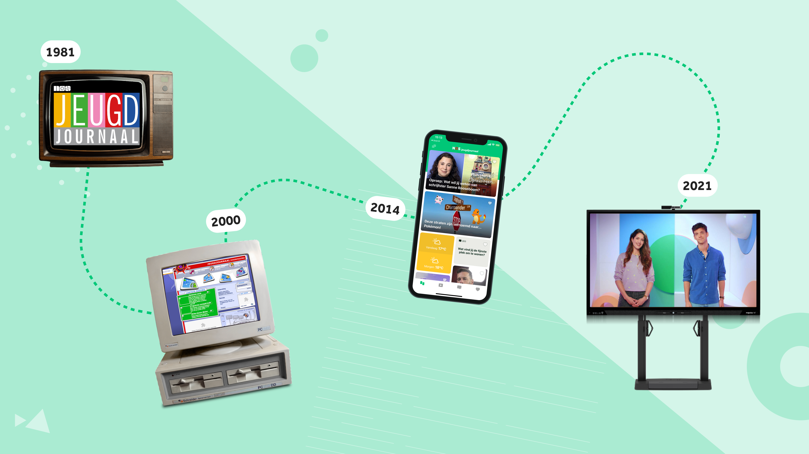
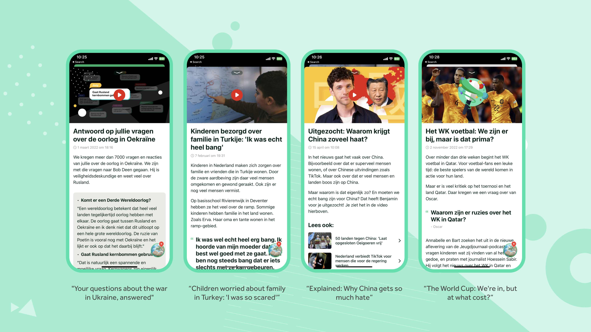
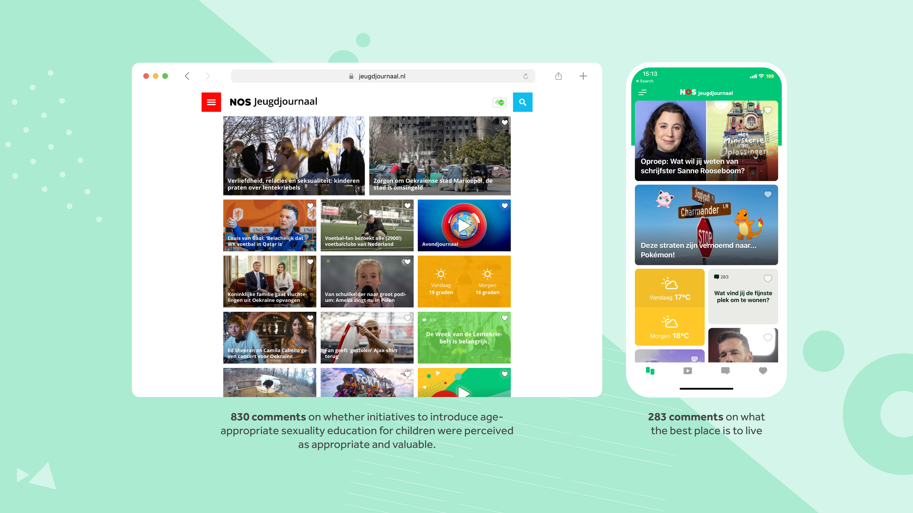
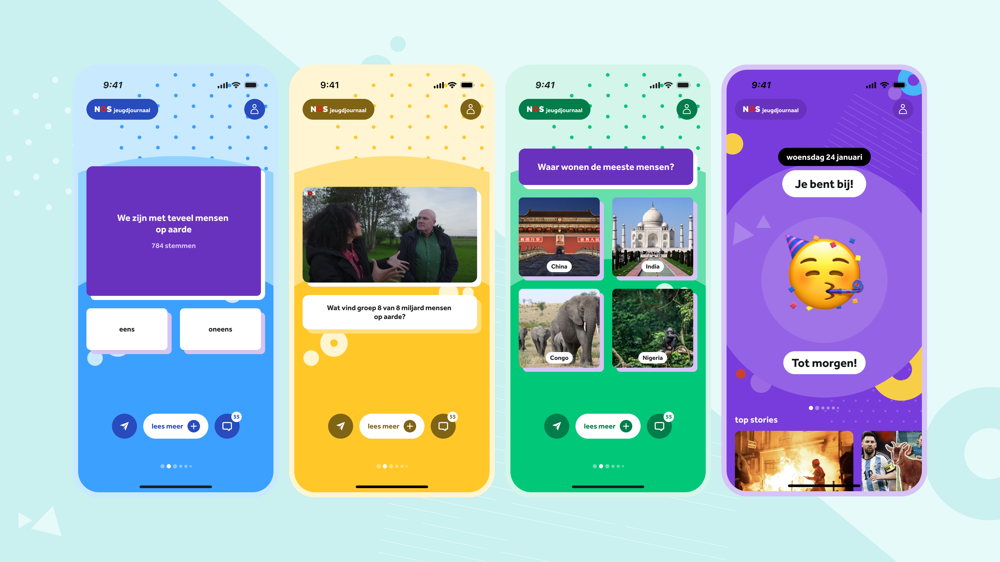
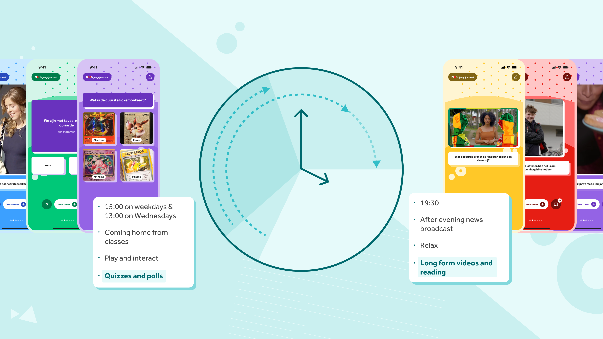
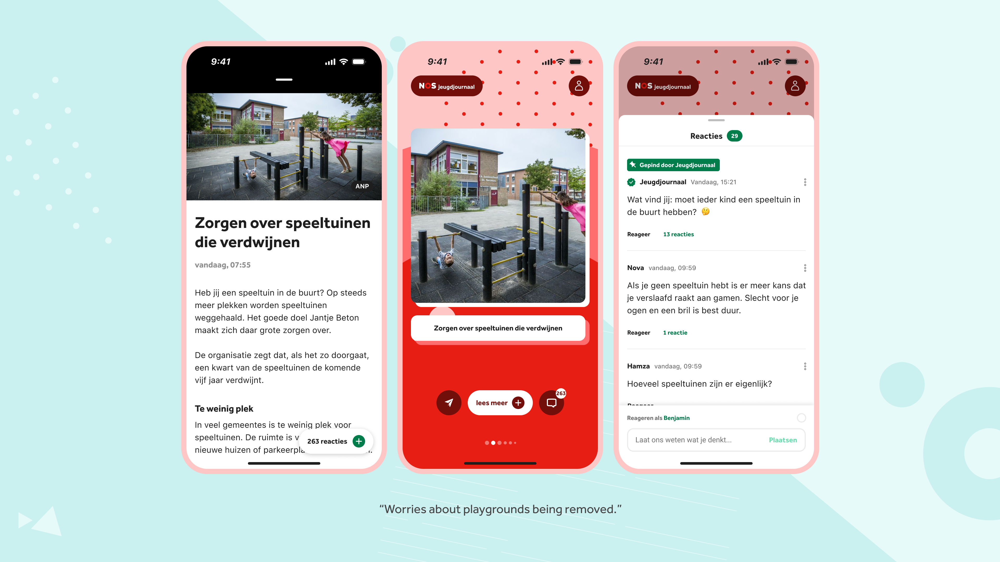

Reimagining How Children Experience the News
Redesigning the Jeugdjournaal app to increase daily engagement and build a news experience children actually want to come back to

Problem
Jeugdjournaal had built a strong editorial reputation for delivering reliable, age-appropriate news to children in the Netherlands, yet the product was no longer doing justice to the quality of journalism behind it. As children's digital behaviour evolved rapidly, the team needed to understand what a meaningful news experience looked like for 8 to 12 year olds in 2024: one that supported news literacy, respected cognitive development, and felt trustworthy to the parents and teachers around them.

Research
Design Sprint
A sprint was facilitated with the head editor, online editors, and news reporters to map how public broadcasters across Europe approached digital outreach to children, and to identify where the product was falling short. The key insight was that the editorial team's standards were high but the product wasn't keeping up.
Expert Interviews
Conversations with the product owners of the Danish children's news platform and Dutch public broadcasting surfaced a critical tension: the word "news" carries a weight that doesn't naturally draw children in unless they already feel a personal connection to the brand. Interviews with academic researchers in cognitive development and digital media shaped the guardrails for what the product could and couldn't do.
User Research
Focus groups and individual interviews were conducted with children aged 8 to 12 across eight schools in cities, villages, and different educational systems to understand how they use their phones and what they genuinely need from a news experience. A product audit ran alongside this to identify what was already working and what deserved more prominence.
Desk Research
A review of literature on developmental psychology and the teenage brain provided the theoretical foundation for interpreting findings and validating prototypes later in the process.
Findings
Children
Children didn't just want to consume news, they wanted to participate in it. Jeugdjournaal's reporters held a status similar to role models in their eyes, creating a natural motivation to engage and be heard.
The editorial team
The team actively welcomed participation. Children's comments and reactions already shaped content and the morning broadcast regularly dedicated airtime to viewer responses. The product wasn't reflecting that relationship.

The app
Articles varied significantly in content type across text, video, and interactive polls, but the interface treated them all the same. Video ranged from long-form in-house productions to short snackable clips with no way to tell them apart at a glance. Children had questions about what they read but no clear channel to ask them.
Design process
Early explorations tested several structural approaches in Figma: an infinite scroll model, a card-stack flow, and a curated daily digest. Concepts were tested in focus groups across eight schools varying in education style and location, from cities to villages across the Netherlands. Findings were fed back to the engineering team to assess feasibility before moving to high-fidelity screens. The product owner and I aligned on scope after each round, prioritising changes that would have the most impact on daily return visits.
Solution
Curated news flow
A content-type hierarchy was introduced to surface the most prominent element of each article upfront, so children immediately know whether they're about to read, watch, or interact. The article view was redesigned to present one piece at a time, removing visual clutter and creating a more focused reading experience. The flow has a defined endpoint: finishing the day's news feels like an accomplishment rather than an interruption of an endless stream.
A time-of-day content model tailors the experience to when children actually consume media, with lighter and shorter content in the morning and longer pieces in the afternoon.


Digital comment literacy
A comment section was introduced across all articles, giving children a direct channel to ask questions and respond to topics. Before participating, children agree to a set of house rules that establish expectations around respectful engagement. They are encouraged to use a username that doesn't reference their real name, giving them a safe space to develop their voice online. A dedicated team of online editors moderates all comments, ensuring the integrity of the article and the safety of the space.

Outcome
Usability testing showed children moved through the curated news flow without drop-off and consistently returned to the comment section after finishing an article. The editorial team reported that comment volume and quality increased meaningfully after launch, with more questions directed at reporters and fewer off-topic reactions.
What we'd do next
Accessibility features for children with dyslexia or Dutch as a second language are the clearest next priority. A comment literacy framework that labels pinned comments as "constructive" or "thoughtful" would help children model what good online discussion looks like, turning the comment section into a learning tool as well as a participation channel.
Next case study
Bringing the Classroom Into Focus →